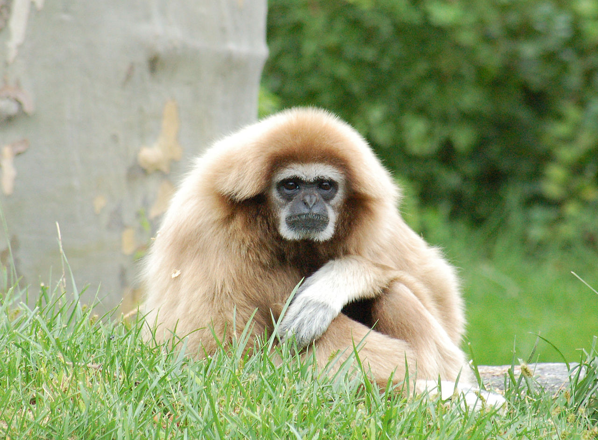

(Anthropoidea) — ძუძუმწოვრების ქვერიგი პრიმატების რიგისა; აერთიანებს უმაღლესი ძუძუმწოვრების და
ადამიანის ოჯახსაც. ბალნიანი საფარველი კარგადაა განვითარებული. სხეულის ზოგიერთ უბანზე ბალანი შეიძლება ძლიერ იყოს
დაგრძელებული, რის შედეგადაც წარმოიქმნება ფაფარი, ულვაშები, წვერი, ფუნჯები (ყურებსა და კუდზე). უმრავლესობას სახე და
ყურები ტიტველი აქვს. რიგ სახეობებს (პავიანებსა და სხვებს) აქვთ ძლიერ განვითარებული საჯდომი კორძები, რომლებიც
მეტწილად მკვეთრი წითელია. მრავალი სახეობის მაიმუნებს (როზალია, ანთარი, მანდრილი, გვერეცა და სხვა) კაშკაშა შეფერილობა
აქვს. ქალას ზომები (ტვინის ქალას და სახის ქალას ურთიერთშეფარდება) განსხვავებულია მაიმუნების ჯგიფების მიხედვით. ზოგს
ქალაზე აქვს მაღალი ტროპები, რომლებსაც ემაგრება მძლავრი საღეჭი კუნთები. მაიმუნებს კარგად აქვთ განვითარებული მიმიკური
კუნთებიც. კბილების რაოდენობა განსხვავებულია. კუჭი ჩვეულებრივ მარტივია, მხოლოდ თხელტანიანი მაიმუნების კუჭია რთული
(ძირითადად მცენარეულობით კვებასთან დაკავშირებით). მარტივია მათი საშვილოსნოც. ბრმა ნაწლავი ყველას აქვს, ზოლო ჭიაყელა
ნაწლავი - მხოლოდ ადამიანის მსგავს მაიმუნებს. მაიმუნებს დიდი თავის ტვინი აქვთ. განსაკუთრებით გამოირჩევა წინა ტვინი.
გრძნობის ორგანოებიდან კარგად აქვთ განვითარებული მხედველობა და სმენა. თათები სატაცია. ორივე წყვილ კიდურზე ცერი
უპირისპირდება დანარჩენ თითებს. თითებზე აქვთ ფრჩხილები. გამონაკლისს წარმოადგენენ მოთამაშე მაიმუნები, რომლებსაც
ნამდვილი ფრჩხილი მხოლოდ ცერზე აქვთ. მაიმუნებს მკერდზე აქვთ ერთი წყვილი ძუძუ. მაომუნების უმრავლესობა მეხეურ
ცხოვრებასაა შეგუებული. მაგოტი, პავიანები და სხვა მხოლოდ მიქაზე ბინადრობენ. უმრავლესობა ხროვებად ცხოვრობს, იკვებებიან
მცენარეთა ნაყოფით, ფოთლებით,ნორჩი ყლორტებით, მწერებით, ჭიებით, ლოკოკინებით, ფრინველების კვერცხითა და მართვებით,
ჭამენ აგრეთვე პატარ-პატარა ფრინველებსა და ძუძუმწოვრებს. მაიმუნების მაკეობის ხანგრძლივობა განსხვავებულია: უმდაბლესი
მაიმუნების მაკეობა გრძელდება 4-5 თვემდე, გიბონებისა - 7 თვემდე, ადამიანის მსგავსი მაიმუნებისა - 275 დღემდე.
ჩვეულებრივ შობენ თითო ნაშიერს. მოთამაშე მაიმუნები ხშირად შობენ 2-3 ნაშიერს. მაიმუნების უმრავლესობა სქესობრივად
მწიფდება 3-5 წლისა, ადამიანის მსგავსი მაიმუნები - 7-10 წლისა. პატარა მაიმუნები 20-25 წლამდე ცოცხლობენ, დიდები - 40
წელს და მეტსაც. ტყვეობის (ზოოპარკის) პირობებში მაიმუნები ასე ხანგრძლივად იშვიათად ძლებენ. მაიმუნები ცნობილია
პლეისტოცენიდან. მაიმუნების სისტემატიკის შესახებ მეცნიერთა შორის აზრთა სხვადასხვაობა არსებობს. მაიმუნების ქვერიგში
გაერთიანებულია 5 ოჯახი: მოთამაშე მაიმუნისებრნი, რომელთაგან აღსანიშნავია საგუინი, როზალია; კაპუცინისებრნი, რომელთაგან
საყურადღებოა, რომელთაგან საყურადღებოა კაპუცინი, კოატა, ღრიალა მაიმუნები და სხვები. ორივე ოჯახის წარმომადგენლები
გავრცელებული არიან ცენტრალურ და სამხრეთ ამერიკაში. ანთრისებრნი ბინადრობენ აფრიკაში, აზიასა და გიბრალტარზე, მათ შორის
აღსანიშნავია ანთრები, პავიანები, მაკაკები. ადამიანის მსგავსი მაიმუნების ოჯახშია გიბონები, შიმპანზე, გორილა და
ორანგუტანი; გავრცელებული არიან ტროპიკულ აზიაში. ამავე ქვერიგს ეკუთვნის ადამიანების ოჯახი.
